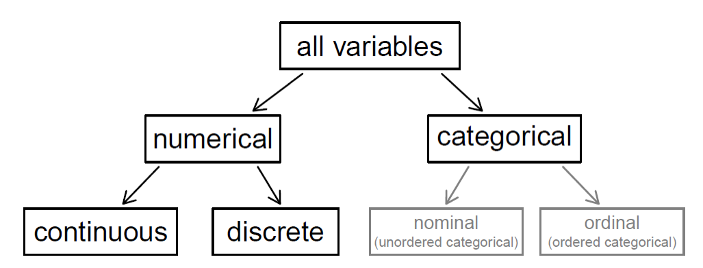

| species | island | bill_length_mm | bill_depth_mm | flipper_length_mm | body_mass_g | sex | year | |
|---|---|---|---|---|---|---|---|---|
| 0 | Adelie | Torgersen | 39.1 | 18.7 | 181.0 | 3750.0 | male | 2007 |
| 1 | Adelie | Torgersen | 39.5 | 17.4 | 186.0 | 3800.0 | female | 2007 |
| 2 | Adelie | Torgersen | 40.3 | 18.0 | 195.0 | 3250.0 | female | 2007 |
| 3 | Adelie | Torgersen | NaN | NaN | NaN | NaN | NaN | 2007 |
| 4 | Adelie | Torgersen | 36.7 | 19.3 | 193.0 | 3450.0 | female | 2007 |
Data, Variables, and Variable Types
Outline
- Data
- Variable types
Data
Data: what is it?
- Measurements?
- Elementary particles of knowledge?
- Digital records?
- Pure information?
- In everyday usage: a jumble of notions about information, science, and knowledge
Is data really raw?
- We often speak of “raw” data and see it as independent of human judgement
- But is it?
- This “independence” is the source of “data-driven” decision-making
- The purported freedom of data from human subjectivity invests it with agency: “Let the data speak for itself”, or “The data doesn’t lie”
Is lots of data enough?
“We can throw the numbers into the biggest computing clusters the world has ever seen and let statistical algorithms find patterns where science cannot.”
Data: caveats
- How data are recorded and collected is the result of human decisions about what to measure, when and where to do so, and by what methods
- “Raw” data signifies that no processing took place following data collection, but the term obscures the steps that took place before even this data was collected
- “All data is cooked” (Barrowman, 2018)
- True in scientific as well as sociological contexts
Observational/experimental data
- Experimental data: in properly conducted experiments, we can ascribe causality as in clinical trials, for example:
- Experiments conducted using a sample from a population
- Observational data: passively observed or measured; cannot ascribe causality
- correlation is not causation
- Big data: we happen to have a lot more observational data now:
- Velocity, variety, and volume
Errors and inconsistencies
Measurement errors
- Random errors can arise from the measurement devices.
- If they are truly random, the average of many measurements will be a sensible estimate of the ‘true’ value
Systematic errors
- Systematic errors are not random and introduce a bias into the measurements.
- Systematic errors will not average out to the ‘true’ value.
- Types of systematic errors:
- Offset errors (e.g., measurement equipment is not correctly zeroed)
- Scaling errors (e.g., measurements are incorrectly scaled by a factor)
- Time-dependent offset (drift)
Variable types
Numerical and categorical variables
Numerical and categorical variables
- Numerical
- The volume of a solvent in a pressure vessel (C)
- The mass of bauxite being crushed (C)
- The temperature inside a kiln (C)
- The number of kilns (D)
- Categorical: having distinct values:
- The type of pump (N)
- Compound being used (e.g., \(\mbox{AlOH}_3\) or \(\mbox{NaOH}\)) (N)
- If a kiln is above a critical temperature (true/false) (N)
- Survey responses (Strongly agree, agree, neutral, …) (O)
Example: Palmer Station penguins
Indexing variables
- Variables can be indexed by time or space (or both!)
- Time
- Time series data: a sequential set of data points measured over successive times
- Common in process plants
- In a continuous time series observations are measured at every instance of time, whereas a discrete time series contains observations measured at discrete points in time.
- Space
- Spatial measurements can be made at discrete locations, or they can be measurements of a continuous field measured at discrete points
- Discrete: rainfall at BoM weather stations across WA
- Continuous: Satellite measurements of atmospheric water vapour
- Indexed by, e.g., latitude/longitude, eastings/northings
Example: Time series data

Data Science Transforming Maintenance